Tateyama, Toyama: things to do, food and stays
Tateyama · Toyama
Tateyama
Highlighted on the Toyama map.
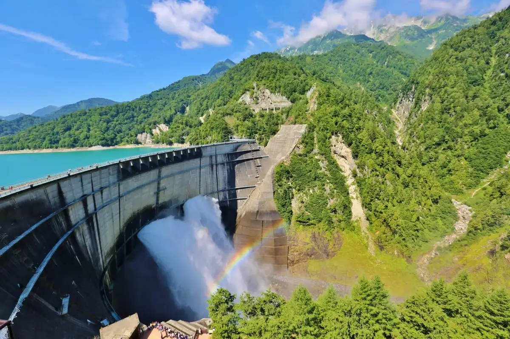
Stay
土肥邸母屋
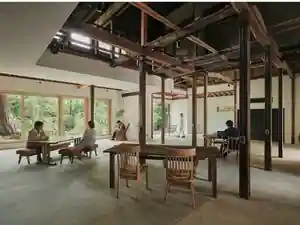
Toi Tei Omoya
Inn in Nitchuueno, Tateyama with a renovated traditional house.
立山吉峰温泉 立山グリーンパーク吉峰
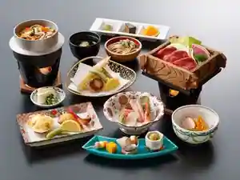
Tateyama Yoshimine Onsen Tateyama Gurin Park Yoshimine
Inn at Tateyamayoshimine Onsen in Yoshiminenokai, Tateyama.
グリーンビュー立山
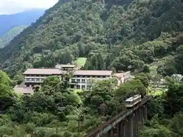
Gurinbyu Tateyama
立山高原ホテル
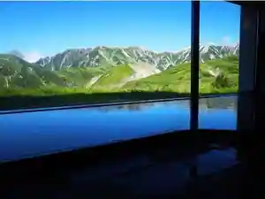
Tateyama Kogen Hotel
Hotel in Ashikuratera, Tateyama with a quiet countryside setting.
弥陀ヶ原ホテル
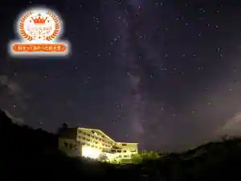
Mida Ke Hara Hotel
Hotel in Ashikuraterabunasakasoto, Tateyama with scenic views and a quiet countryside setting.
みくりが池温泉
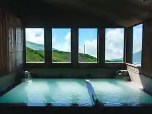
Mikuriga Ike Onsen
Inn at Mikurigaike Onsen in Shitsudotaira, Tateyama with free-flowing hot spring baths.
立山黒部アルペンルート 和みの宿 千寿荘
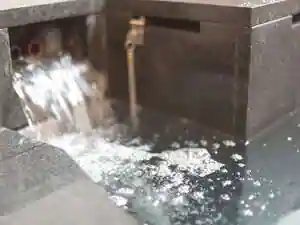
Tateyama Kurobe Arupenruto Nagomi No Yado Chizu So
Inn at Ichibanchikai Onsen in Chizukehara, Tateyama.
富山県 立山荘
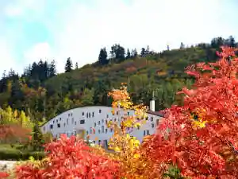
Toyamaken Tateyama So
立山館
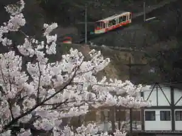
Tateyama Kan
Inn in Ashikuraterabunasaka, Tateyama; 1-minute walk from Tateyama Station.
Dining
りんどう
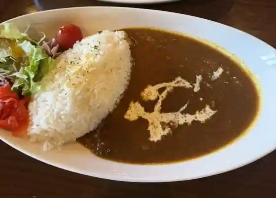
Rindo
黒部ダムレストハウス
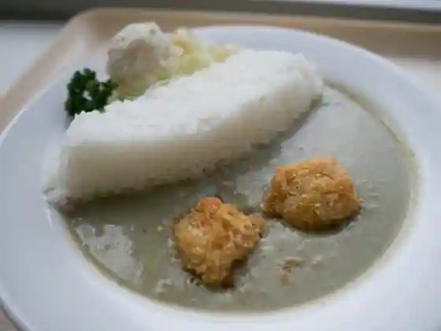
Kurobe Damuresuto House
立山そば
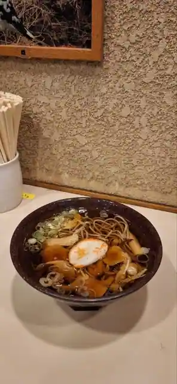
Tateyama Soba
かふぇにこ
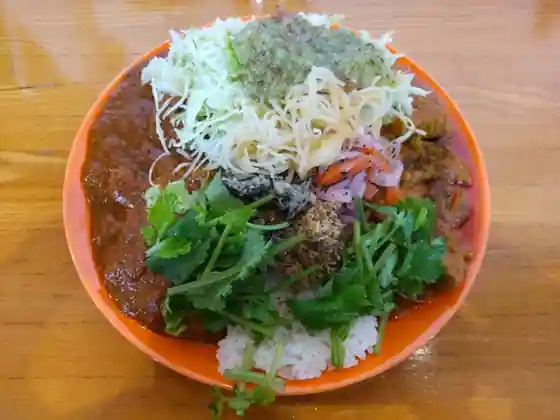
Kafeniko
レストラン立山
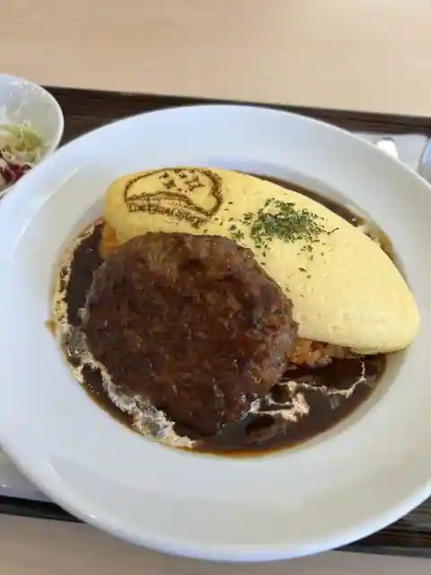
Restaurant Tateyama
喫茶 みくり
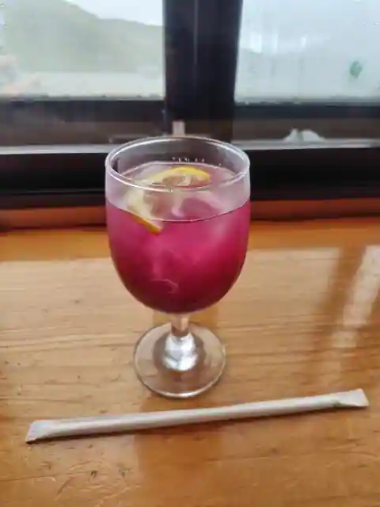
Kissa Mikuri
そば処 おきな
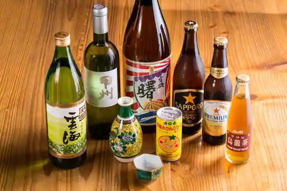
Soba Tokoro Okina
立山サンダーバード
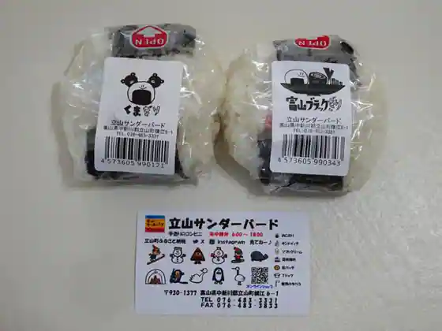
Tateyama Sandabado
黒部ダムレストハウスドリンクコーナー
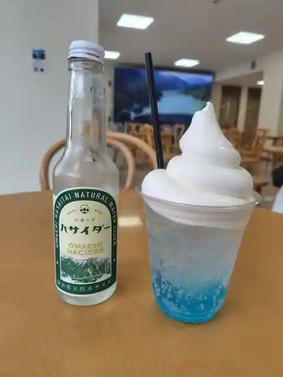
Kurobe Damuresuto House Dorinkukona
nilu curry
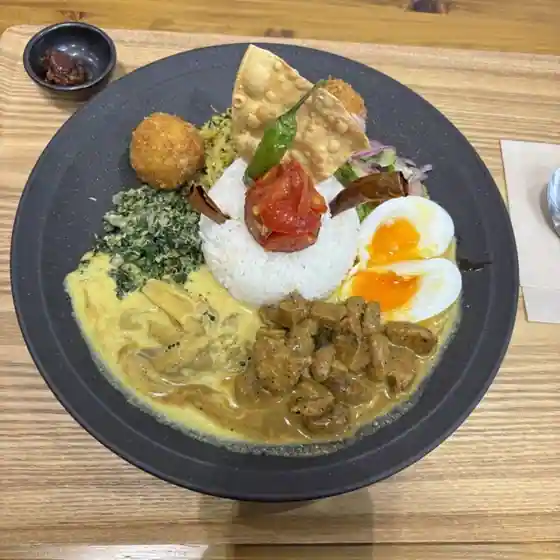
nilu curry
カレー食堂 コロポ
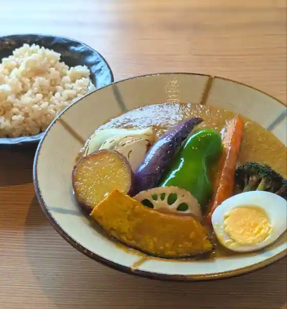
Kare Shokudo Koropo
LOCOMOTION COFFEE AND BED
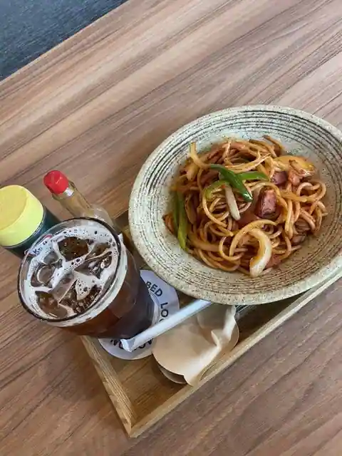
LOCOMOTION COFFEE AND BED
ホテル立山
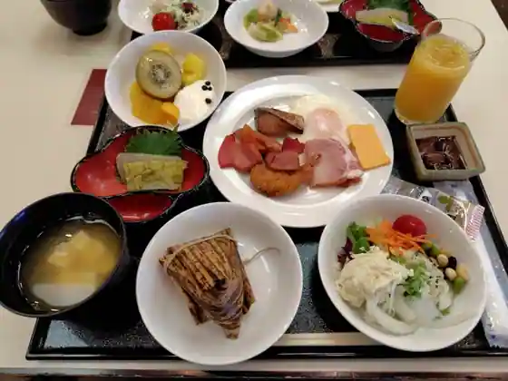
Hotel Tateyama
立山あるぺん村
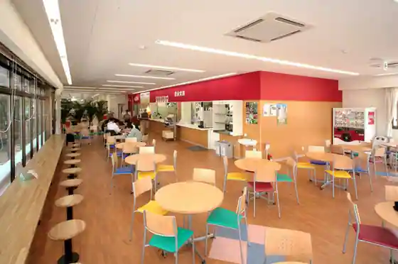
Tateyama Arupen Mura
鮨 たねや
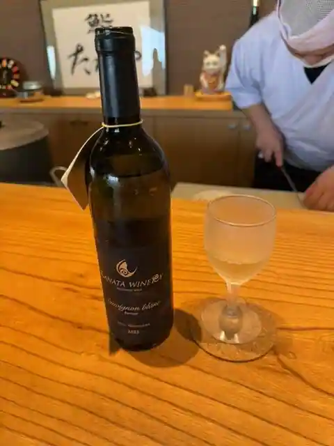
Sushi Taneya
黒部平駅構内売店
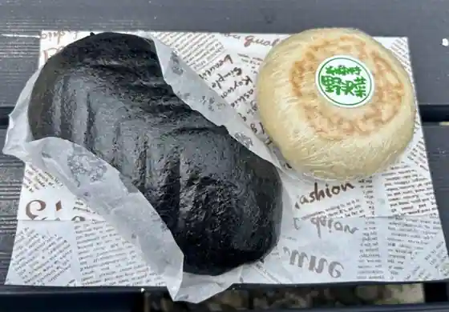
Kurobe Taira Ekikonai Bai
あおき
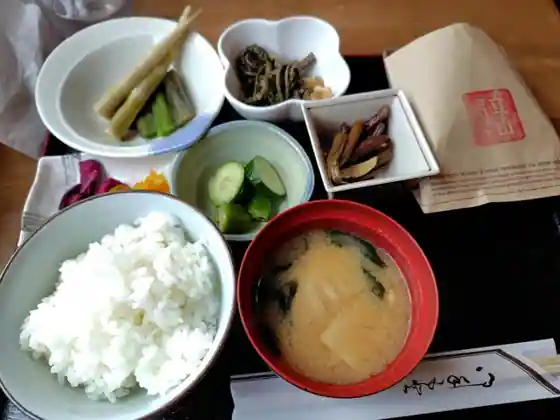
Aoki
雷鳥荘
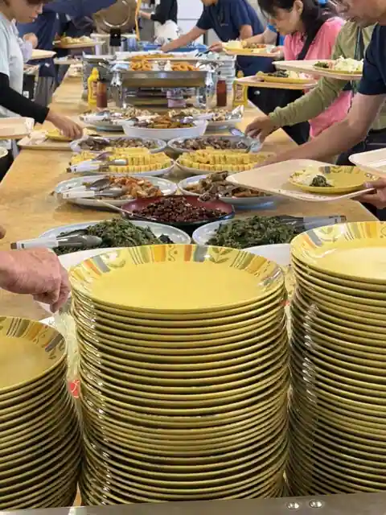
Raicho So
味覚コーナー
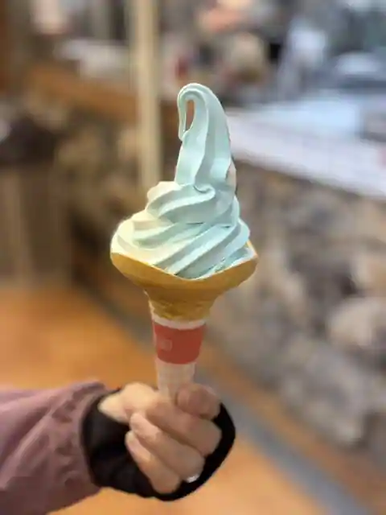
Mikaku Kona
中町
Nakamachi
おにぎりの志鷹
Onigirino Shitaka
寿し工房大辻 立山工場直営店
Hisashi Shi Kobo Otsuji Tateyama Kojo Chokuei
Sights
Shomyo Taki
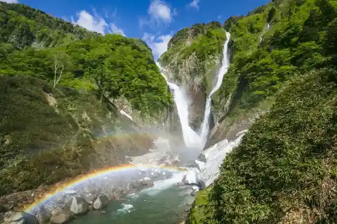
Raichosawa Campground
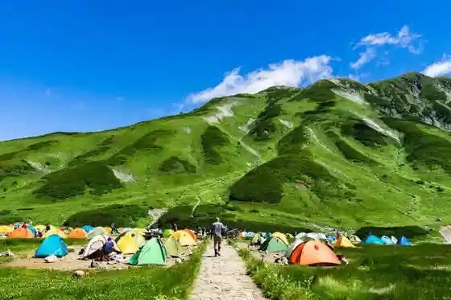
Mikuriga Ike
Tsurugi Sawa Campground
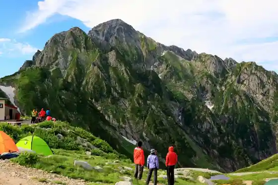
Kurobe Dam
Tateyama Kurobe Yuki no Otani Festival
Midagahara
Mikuriga Ike Onsen
Tateyama Kurobe Arupenruto
Tateyama Shitsudo Sanso
Sasara Ya Tateyama Main Shop
[ Tateyama Museum ] Tenjikan / Haruka Bo Kan / Mandara Yu En
Bijo Taira
Sushi Tokoro Ita Hashi
Oyama Shrine Ashi Kura Chugu Kigan Dono
Tateyama Ashi Kura Furusato Koryu Kan Mandara Shokudo
Tateyama Green Park Yoshimine
Toyamaken Tateyama Karudera Sabo Museum
Sen Yama
Tateyama Arupen Village
Healthian-Wood
Tateyama Nature Hogo Center
Joganjigawa no Seiryu
Kurobe Taira
Onigiri no Shitaka
Toyamaken Joganjigawa Park
Taikan Mine Nature Park
Iwamuro Falls
Etchu to Village to no Kan
Toi Tei Naya
Midagahara Hotel
Tateyama no Yamazaki Kenkoku
Tateyama Genki Koryu Suteshon
Tateyama Nature Fureai Kan (Konchu Okoku Tateyama)
Aku Shiro no Kabe
Noji Kumiai Hojin Tateyama Eino Kumiai
Tateyama Sangaku Sukii
TATEYAMA SAUNA
Han no Ki Taki
LOCOMOTION COFFEE AND BED
Guriimbyu Tateyama
Shitsudo Hotel Tateyama (Teiiraunji Rindo)
Otsuji Yama
Momberu Tateyama Besukyanpu Bijita Center
Chukaryori Daisangen
Soba Tokoro Okina
Tateyama Tourism Association
Green Park Yoshimine (O Shokuji Tokoro Yoshimine)
National Tateyama Seishonen Nature no Ie Campground
Rai Hai Yama
Tateyama Rekishi Koryu Suteshon (Nichi Nata)
Kashibesso Donguri
to Kurayama
Taniguchi Shu Gakko
Te Hineri Experience, Etsuke Ke Experience (to no Kan)
Chigo Tsuka Burial Mound
no no Ie
Toi Tei Omoya
Kafe Do Manderin
Kyu Shima Ie House
Arupen Village Tourist Farm Ichigo Hausu
Tateyama Town Hall